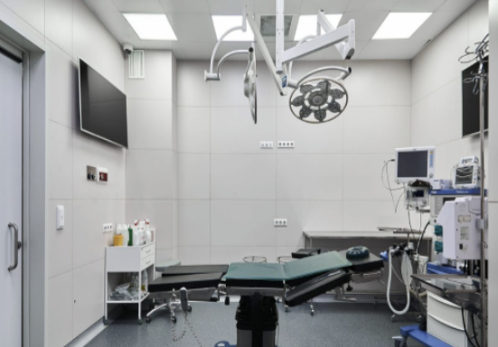

Sunrise Care Hospital is a leading healthcare provider in Phnom Penh, offering high-quality medical services since 2012. We focus on patient safety, technology, and professional care. Our hospital provides services in cardiology, pediatrics, surgery, internal medicine, and emergency care. With a team of experienced doctors, nurses, and medical staff, Sunrise Care Hospital is committed to delivering accurate diagnosis and effective treatment for every patient. Our specialists work together to ensure the best possible medical outcomes. The hospital is equipped with modern medical equipment, clean facilities, and comfortable patient rooms to support both outpatient and inpatient services. We continuously improve our services to meet international healthcare standards. At Sunrise Care Hospital, we believe that compassion and respect are essential in healthcare. Our mission is to provide reliable, affordable, and patient-centered medical services for individuals, families, and the community.
|
 |
| ID | Name | Specialize | Phone Number | |
|---|---|---|---|---|
| 00098 | Preap Sokpisey | Cardiology | 012 345 789 | preapsokpisey@gmail.com |
| 00097 | Chan Prosmao | General Surgery | 012 543 987 | chanprosmao@gmail.com |
| 00095 | Tep Pisithiya | Internal Medicine | 012 987 234 | teppisitiya@gmail.com |
| View More | ||||
|
Cardiology
|
Pediatrics
|
General Surgery
|
Internal Medicine
|
| © Sunrise Care Hospital. All rights reserved. |